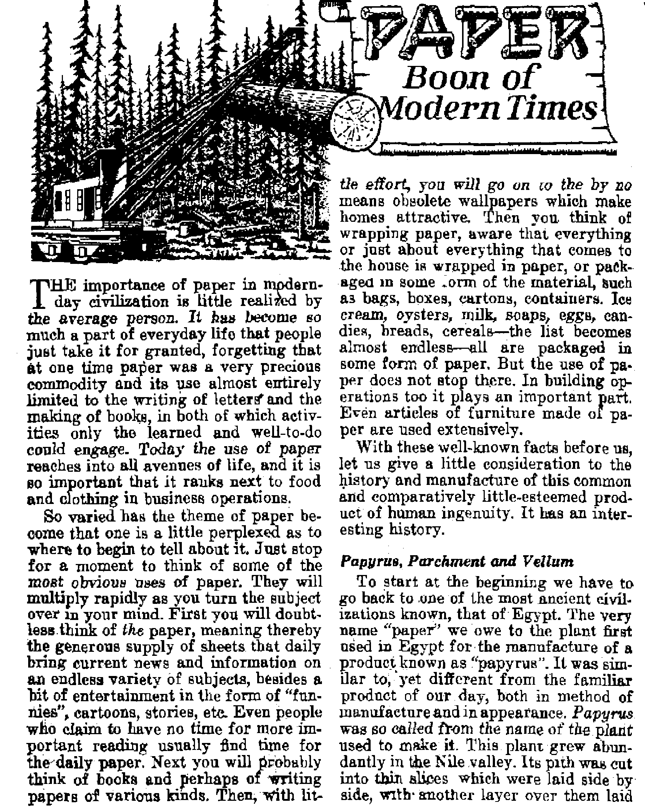
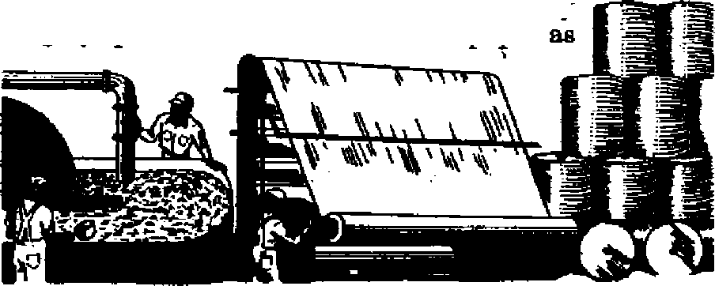

An eye*opener on the status of the basic freedoms in Greece
Awesome Canadian Rockies a monument to their Maker
Religion for some, unscriptural nonsense to others
THE MISSION OJ THIS JOURNAL
News sources that able to keep you awake to the vital issues a£ our times must Jbe unfettered by censorship and selfish interests. 4‘Awake I” has no fitters. It recognizes facts, faces facts, is free to publish facts. It Is not bound ly political ambitions or obligations; it is unhampered by advertisers whose toes must not be trodden on; it is unprejudiced fry traditional creeds. This journal keeps itself free that it may speak freely to you. But it does not abuse its freedom. It maintains integrity to trvth.
1 Awake I" uses the regular news channels, but Is not dependent on them. Its own correspondents are on all continents, in scores of nations. From the four corners of the earth their uncensored, on-the-scenes reports coma to you through these columns. This journal’s viewpoint is not narrow, but is international. It is read in many nations, in many languages, fry persons of all ages. Through its pages many fields of knowledge pass in review—government, commerce, religion, history, geography, science, social condition*natural wonders—why, its coverage is as broad as the earth and as high as the heavens. .
"Awake!” pledges itself to righteous principles, to exposing hidden foes and subtle dangers, to championing freedom for all, to comforting mourners and strengthening those disheartened by the failures of a delinquent world, reflecting sure hope for the establishment of a righteous New World.
Get acquainted with 4< A Wake I" Keep awake fry reading “Awake!”
PuffLlBHHTJ SsxniOHTHLt Bf WATCHTOWER BIBLE AND TRACT SOCIETY, INC.
Ill Adams Street Brooklyn 1, N. Y.t U, S. A.
N. H. Knoeh, FreaWcnt Ghani aciTHK. Secretory
Five cents a copy On® <*oirar a year
Ghtaft Trhflit rent tn tmr gtDce tnay be
tfleetivt vlihliD tnu nrartb. Stud m tilfl
M will u csv
Offlceg Yasrly SubeeriptlM Rats
BaHittiiica bBoiH b» Mrt to to W com), fa cGmpiluuH with Hfifiadfint to fokrnite*
■■/a delircr? of Euurty. fcflnUtenca uv accepted at TtrrmirTvn cDuntrtes ffbfln no offlee La located, br imtruUoto nmar uniar only SubnljjWit) ntig hi dtflamnt tountrloJ an hm silted in local ... . .
wrtwmfT Guito 4Q Irrin. rorautfl J5, Cniuto
Hstlw «T aumtlae (wltb tgoml H«oi) la wnt, EnHMi.SA Cnnn TertmcQ, Ualw. W. 2 last Into bntvn n±*crtjrtton tzjtaa, M*n 423 Bostep Homa. Cape Town
AiMerfta. O.S.. Ilf Atom Bt, Bmkfrn 1. N, Y, Akttrllla, 7 Bfltwfwd HA, StratM?ld, NJ.W,
U
*1
5s
Ea
ffntwtrf in easoJ-elaw nutter st BtooNto. N. Y., Aft at Hardt 3, 1873. Printed U U. S. A
CONTENTS
toes Aid to Greece Aid Democracy!
la the Greek Government Democratic! 5
lent Proclaimera of Creator’s Power
Afi Seen Through Feminine Eyes
Science-Worshipers Claim a “Miracle”
Elephants Acclaimed as Fire-Fighters
The Arctic Tern. Globe-Trotter
“Thy Word Is Truth”
Do Yoa Celebrate Your Birthday ?
Volume XXVIII Brooklyn, N.Y., June 8, 1M7 Number 11
WHEN President Truman spoke before a joint session of Congress on March 12 in support of United States aid to Greece and Turkey he talked about "free peoples” and ‘Tree institutions"’, about "helping free and independent nations to maintain their freedom”, about helping such nations “to maintain their freedom and independence” The fight is “against coercion and intimidation”, he said. “The free peoples of the world look to us for support in maintaining their freedoms.” Truman specifically spoke of “democratic Greece”, and the “democratic Greek government”. Strange qb it might seem, this proposal, presumably for the aid of peace and democracy, touched off a series of international explosions, the echoes of which are still heard around the globe.
The public press was instrumental in whipping up a froth of propaganda favoring the measure as “the most important foreign policy decision since the end of the war”. Others heralded it as “our only hope”. “Rev.” Edmund A. - Walsh, the Jesuit president of Georgetown University, praised the proposal; <fBev. Dr.” Ralph Sockman said it was "both good Christianity and wise strategy”. In addition to this loud applause favoring the Greek aid plan, opposition was heard from a minority who expressed their doubt that such would really aid democracy. They called the Truman scheme a "scare crusade” and a*“re6klesa adveu-ture”. Certain members of Congress questioned the advisability of such policy: Is there “any difference between America operating in Turkey and Greece and Russia operating in the nations of eastern Europe”! "How can America ask Russia to retire within its national boundaries if America has no intention of remaining within her own!”
Heavy charges were leveled against Hie proposed aid on the ground that it would lead, not to peace, out to a third world war. Truman hud told about the deplorable and tragic conditions of the Greek people; how their railways, roads and communication lines were destroyed; how their villages were burned, their livestock killed, their children tubercular; how Greece, needed food, clothing, fuel and seede. Yet, in spite of this, practically all the $250,1 W,1)00 ^r Greece would be used exclusively for military aid; not for tbe relief of the suffering.
Foreign reaction to the "Truman Doctrine” was mixed. Some said it was a move toward peace; others, a threat of war. A special New York Times dispaten from Madrid said: "The press, which may be taken as official reaction, leaped on the speech as one of the rare cases where on Anglo-Saxon statesman's views coincided with Spaiifs.” Everybody knows what Spain's view's are about freedom and democracy. Churchill, long noted for his imperial philosophy, also praised the proposed aid with jubilation and as a "great event”. From Rome, a
Jfew York Times uispatcn sam mat there it was interpreted "as a declaration of war by the Western democracies mi the Slav Communist bloc”.
The De Gaullist newspaper VOrdre flaid that Truman’s "concern is not for democracy but for the interests of American big business men who are in full action in the Near East”. This was also the sentiment of Senator Taylor, who said: "It becomes unmistakably clear that the objective is not so much food for the Greek people as oil for the American monopolies,” A Harvard scientist, Dr. Harlow Shapley, asked: "If you mean oil, Mr. Truman, why say Greece 1 Why say Turkey, when you mean gravy . . . commercial gravy for the few at the potential expense of the blood of the many ?”
Though the United States is separated from Russia by a great gulf, she cannot overlook Russia's opinions and reactions on such international policy as this. The magazine New Times, which speaks for the Russian foreign ministry, linked Rome and Washington together in a gigantic plot to create a "Catholic, American bloc”. Another Moscow dispatch said that Truman's statement was frankly directed against the democratic elements of Greece” The newspaper I&vestia inferred that the United States was using the same poison on its arrows as Hitler, who "also referred to the Bolsheviks when he wanted to open the road to conquests”. The American Labor party compared Hitler's 1939 cry of *&ave the world from Bolshevism' with this 1947 cry of Truman to ‘Save the world from Bolshevism'. The program was a "blackmail” plot to force people of the world to accept western democracy along with American dollars, said Tito.
By-passing UJV*
Those who think the United Nations is the savior of the world were very much upset because the United States seemed to be pushing the United Nations tc one side in this matter. Such action, they think, will not benefit democfrfcfife processes. If the situation in Qreecd is as bad as Truman said it was it could be brought before the Council under the provisions of Article 34. If the British handed over the Palestine question to the United Nations, why not hand over the Greek issue? Eletfnor Roosevelt was also "grieved”. "If Greece is in danger,” said Wallace, "let the United Nations tell us the facts and recommend action.” “No arms or loans to Fascists or reactionaries. Let the Greek issue go before the United Nations for a durable peace based on United States-Soviet friendship,” wrote the Daily Worker.
Gromyko, in delivering a scathing denunciation of the plan, said: "Such action of the United States not only does not contribute to the strengthening of the United Nations organization, but, on the contrary, it weakens this organization and undermines its authority.” United States ‘aid', he said, was only screened military arming of Greece. The New York Times said Gromyko "presented a sound, logical case against what he called the ‘by-passing’ 'of the United Nations by the United States”. More than 1,000 visitors heard the speech, and out of 25 interviewed by the Times reporter,80 percent supported his argument. Among the 20 percent not in favor, the Times said: "Three nuns laughed in unison when asked for a ‘reaction’. One said they had had their minds made up before the session and ‘Mr. Gromyko’s address, has not changed us?” Some logic, that!
If the real intention is to aid democracy, what about countries like Spain, Portugal and Argentina t That is what James P. Warburg, onetime deputy director of the Office of War Information, wants to know. "^Ve are told the situation is urgent; that we dare not wait for the United Nations. . . . President Truman mentioned Poland, Rumania and Bulgaria as examples of where this had happened [wliere a minority had for-
flibly coerced the majority], and Greece and Turkey as examples of where it would happen, unless we intervened. What about the people of Spain! What about the people of Portugal! What about the people'of Argentina! Is Francoless of a dictator than Tito! Ie Pcron’s government in Argentina less totalitarian than the present government of Poland!/*
Said the Chicago Tribune editorially: “The Truman speech also leaves the United Nations as a meaningless relic of mistaken intention*. The world league to insure a lasting peace is a fraud and a sham, so impotent that Mr. Truman proposes that the United Slates ignore it and seek peace by force and threat of force—the very means which the U.N. was intended to exclude in international dealings?’ These accusations brought Warren Austin, Senator Vandcnhurg and others very much in the news as they attempted to save Uncle Sam's face from the chargee of by-passing the United Nations and using power politics in the Near East, and caused a clarification of the program relative to the United Nations to be written into the aid bill.
Aid to Turkey
Will aid to Turkey aid democracy! Tn World War I Turkey fought against the United States, and for the last 25 years the country has had one-party rule headed by Peker, the “strong man”, who believes that the state is supreme. Suppression of civil Liberties, control of the public press and interference in economic life are some of the aeeompliah-mentB of his rule. During the recent war Turkey harbored and worked with that old Vatican-Nazi wolf, von Papon. and declared war on Germany and Japan only a few’ weeks before Germany capitulated in 1945. Since the war Turkey continues armed to the teeth with 1,000,000 men on a full wartime basis. It is admitted that there is no dire need for economic relief in Turkey today and so the entire amount of $150,000,000 of U. fi-aid will be used solely for military purposes.
The Armenians, calling to mind the horrors of the past when a million of tbeir people were massacred, oppose the Truman gift to Turkey on the grounds that the country is totalitarian, is the originator of what is called the “monstrous concept of genocide", and is at present denying Christian and Jewish minorities “equal civil rights enjoyed by the Turks”.
/« the Greek Government Democratic?
For the last twelve years Greece has been under the rule of some form of dictatorship. After the Nazis pulled out the British took over the situation and set up an arch religionist, Archbishop Damaskin os, primate of Greece, as regent It was under his political maneuvering that a plebiscite was held last September, the first election in ten years, in which 1,166,512 votes were east in favor of bringing back the king that had been thrown out twice before; 521,246 votes opposed the king’s return. /Observers” of the election considered it to be “a fair expression of the views of the Greek peopled “But,” says the New York Times, “those views, let us frankly admit, were colored by the fear that a vote against royalty would be construed as a vote for communism.” It was a case of choosing the lesser of two evils. The present government asserts that it represents 85 percent of the political Greek parties, but Raymond Daniell of the Times says that “this is somewhat misleading'’ sjnee at least 30 or 40 percent, of the Greek opinion is not represented in the government at all.
Whether the Greek government represents the people or not “the United States does not intend to demand changes in the Greek government/, it is reported. The theory is that if military aid is given to strengthen the hand of the present Greek government law and
order and economic security will be established. However, it is a fallacy, as pointed out by Mr. Sidney Hook, chairman of the department of philosophy, New York University, to confuse economic security with democracy. The peo-81e of a totalitarian country like Nazi ermany, Franco Spain or Communist Russia may have economic security but they do not enjoy freedom of expression and action as set forth in a Bill of Rights, and which is an integral part of real democratic government
If the people of Greece do not enjoy freedom of speech and press, aud, more important, if they do not possess the sacred right to worship God as He has commanded, it is a mistake to say that they enjoy democracy. Moreover, if the aid that is given to Greece merely strengthens the hand of a regime that denies these basic rights democracy will not he promoted. Let us, therefore, take a closer look at the present Greek government, not to see what particular political parties it embraces, but rather its attitude toward the basic freedoms.
In Greece there is a union of church and state in violation of the first principle of democracy. Nor was this changed on the death of George IL King Paul was sworn into office by Archbishop Damaskinos while standing before a candlelit crucifix. Said Paul: “I swear in the name of the Holy Trinity to protect the prevailing religion of the Greeks. , . . Ab a result of this illicit union, the clergy of Greece rule with as much power and authority as the clergy of Ro-maA Catholicism did during the Inquisition, and anyone who disagrees with or opposes the clergy is automatically labeled a seditionist. There is also a law in Greece that forbids “proselyting”, and so true Christians who sincerely believe the Bible and tell the people about God's righteous kingdom are charged with the crime of "heresy", and are thought worthy of death.
Jehovah's witnesses, who follow the command of Christ, “Go ye therefore, and teach all nations” have drawn the fire of the clergy of that land. (Matthew 28:19,20) All over Greece these be-whiskered, black-robed “Pharisees” rage against the Lord's witnesses. They circulate a pamphlet under the imprimatur 1 of the Athens Archbishopric, for the purpose of inciting riots against what they call “these heretics” who are “working actively and making their appearance under the name of Bible Students or Jehovah's witnesses”. “Avoid with detestation,” the pamphlet continues, “the Chiliastic false beliefs and blasphemies. Stop your ears to the Chiliastic myths of an earthly kingdom of Christ, Throw out of your homes the women who pretend to have come to lead you in the right way but who have come to inject the Chili-astic poison, in your soul.”
In obedience to these wicked denunciations by the clergy so many crimes were committed against Christian men, women and children by Officers of “the law”, government officials and others, it was necessary for Jehovah's witnesses to take action iu defense of freedom and democracy. A memorandum, “The Case of-Jehovah's witnesses in Greece,” was prepared and submitted to all the high government officials. It told of some of the atrocities inflicted on Jehovah's witnesses. For example, it told how two women were brought to trial on the charge of being Jehovah's witnesses, were sentenced to 40 days in prison, and were deliberately thrown into a men's prison though there was a woman's prison in the same town. All pleas to have them placed in separate cells were denied. For 40 days and nights these two women, one about 18 and the other 40 years of-age, were humbled and humili-, ated in the presence of 300 hardened criminal men, with no toilet facilities or privacy.
The memorandum told how the clergy were directly responsible for the persecution. In Serras the metropolitan himself repeatedly urged the people and schoolboys to mob and stone the witnesses. In Thessalonica it was a fanatical religionist that caused two young witnesses to be brutally beaten. It was the bishop of Triccala that was responsible for the hrntal persecution inflicted on the Lord’s servants at Pheki.
A letter received from Tourcoleka, dated December 5, 1946, tells how Jehovah's witnesses were ‘arrested without a warrant, and driven out of their homes and thrown into prison. In many cases they have been brutally beaten and in one case the victim succumbed to death as a martyr for Jehovah’s cause. It was in Thcssalia in Karditsa. Most witnesses have been sentenced to long-term imprisonments”. Another letter fromPruei-non, Pehrnfl.ry 28, 1947, states:
Due to a movement by intolerant religionists in Greece lately, a great persecution has been started and is in progress, full of terrifying incidents against the God-fearing witnesses of the Lord. . . . These clergy have incited fanatical religionists and police against the faithful, confiscated fheir literature, thrown them in prisons, and tortured them with beatings, pulled their hair from their head, thrown them to the ground, and with their fists and their feet beat and afflicted them unto blood.
A still later letter said (March 6, 1947): “On Sunday, March *2, the priests all over Greece denounced our work, the radio blasted Jehovah's witnesses, and even the Methodist Church distributed circulars on the street corners against our work.”
The “Hereaff* Charge
Another Satanic scheme employed by the clergy in their all-out effort to crush the proclamation of the Kingdom message in Greece was the issuing of Regulation No. 67252 by the “General Director of Religions1', requiring all Bible litera-tnre of the Watchtower Society to be stamped on the cover, “Hereey of Jehovah's witnesses.” Even copies of the Holy Scriptures were confiscated because they did not have the “heresy" seal on them, and it was only after great and repeated effort was made that they were released. Other Bihle literature shipped from America was retained. Highhanded action like this not only violates every principle of democracy, but also international agreements between the United States and Greece are violated. But what do the clergy care for international treaties 1
The confiscation ef American property hy the clergy-ridden Greek government made it necessary to bring the whole matter to the attention of the American ambassador at Athens, on January 22 of this year. A supplement to this memorandum was filed on March 21 by the representatives of the Watchtower Society, and therein it was stated: “All efforts to obtain redress from the Greek Government have been in vain J Many of the ministry departments have been appealed to and tbe entire court system of Greece has heard ,our cases nt. one time or another. All to no avail! Even the Supreme Court has failed to stop this persecution.” At the request of the American Embassy further detailed information was supplied on April 24, setting forth some or the latest outrages against these Christians. One of these is as follows:
Shocking and outrageous in this era of enlightenment and freedom is the case in Kou-kourava, Agias, on April 4, 1947. There, under the influence and direction of one I. Pap-paha tzopo ulus, priest of the Greek Orthodox’ Church, all of Jehovah's witnesses of this village were gathered into the center of the town by Major Liorakos, member of the well-known Rimini division. Whole families were dragged there by about fifty armed soldiers and seven of their officers. Mr. Harai ambos BuuziuuIuib, spokesman for these Jehovah's witnesses, was told that all their children were going to be baptized by them. Upon his protecting that
they were Christians ana jenovairs witnesses who 'had been previously baptized and who recognized baptism*as an essential part of Christianity, but who objected to having their children baptized by another religious organization, Mr. Bouzioukas was assaulted and beaten by this Major Liorakos. Then the major commanded that the children should be forcibly baptized. The children clung to their parents and the parents held to their children, but they were forcibly torn apart by the soldiers and the religious ceremony of baptizing the children, guarded by the soldiers with their guns, started. Imagine, making “Christians1’ out of these children by medieval methods! Please note, Your Excellency, that this is not a page torn out of some history book of an account during the Dark Ages, but an actual event happening in Greece in this very year 1947.
In this fully documented memorandum to Ambassador MacVeagh it was told how police officers had gone to Watchtower subscribers that were not Jehovah’s witnesses and threatened them with exile and banishment if . they continued to receive The Watchtower, a magazine that has a circulation of more then a million copies a month throughout democratic lands. Homes had been broken into and ransacked; children had been beaten with oxtail whips until their whole bodies were black and blue, just because they were Jehovah’s witnesses. In the city of New Ionia, near Athens, the chief of police personally jerked out bunches of hair from the heads of the witnesses. In New Philadelphia, which name ironically means '‘city of brotherly love”, the persecution is so severe that all meetings for worship were di scon-
Tinuea. w ^irnenB nseii uu» year on we night of April 6, when Christians were gathered together to celebrate the Memorial of the Lord’s death, the most sacred occasion on the calendar, the police broke in with their machine guns leveled on the 18 men and 13 women and ordered them to disperse.
This document reported 688 arrests and 139 convictions of Jehovah’s witnesses between May, 1946, and April 20,1947, and this was not complete, due to disrupted communications. Neither do these cold and lifeless figures tell the whole story of suffering, blood and death, and the tremendous financial losses in pay, court costs, fines, and property destruction sustained by these harmless Christians.
Faced with these facts, will American aid to Greece aid that country to attain the democracy enjoyed in the United States? As long as that land is held in the oppressive grip of a church-state rule, that long freedom and democracy will only be by-words of little meaning. If aid is withheld the fear of Russian expansion and a third world war is increased, It is therefore obvious that the whole.world is in a dilemma; their *fwise men” are dismayed and know not which way to turn. There is only one way to turn that will bring in a happy ending of present troubles. That turn is certainly not to Communism, nor to Fascism, nor even to more liberal Democracy. The turn of all persons of goodwill should be to Theocracy, to God’s kingdom under Christ, Only that righteous rule, and no human government, offers solid hope for the people.
o4 ^Bad TJebt
Recently a witch doctor appeared at a police station in Tanganyika, Africa, to request help to cohect a fee. He said: “The man asked me to call a lion to kUl his enemy. I did. The enemy is dead. Now he won’t pay.” The authorities in this locality have seized natives as “lion men” and “lion women” ip aozens of. recent killings, where the victims appear to have been killed by lions,
Silent Proclaimers of Creator’s! Power
The Canadian Rockies rite up in th tip matalvr grandeur at monument* to their Maker. Mutely they pral** the eternal power of their Creator. Not through the ears hut through the • >*•* qom(» their voleeleva testimony to men. "For ever ainea the creation Of thO universe Codr* invisible attribute*—hi* everiaeiinp power and divinity—are to ba ae*n and etiidtod tn bl* wprk».’'—Romtrn liS), Twentieth Century New Taatement.
AT DAWN on the western plains of
Alberta not all eyes face east to greet the rising sun. Something else catches the attention of the early riser. To the west gray-and-silver cloud hunks catch the light of the new day and discard the subdued shades of night. From delicate pink the colors increase until the entire western sky is a riot of color and life. Then, just as the sun peeks its upper rim above the rounding sweep of the prairie, its reflection darts back to daz-ale the eyes of the spellbound observer, not from the clouds this time, but from just below them, from the towering snowclad peaks of the Canadian Rockies.
To the east of the Rockies arc the Alherta prairies with which fhey make an abrupt junction. The prairies have an average elevation of 3,000 to 4,000 feet, whereas the mountains rise to an average elevation of 8,000 feet and in places exceed 12,000 feet. On the west of the Rockies runs a 600-mileJnng valley and then succeeding parallel ranges, the L Selkirk, Caribou and Gold ranges.
The entire Cordilleran system
reaches a width in southern Canada of some 400 miles and stretch os from the United States to the Yukon to form the northern section of a huge continental backbone which arches itself- into the heavens the full length of both American continents. ’
The great bulk of the Rockies gives them an air of permanence, hut there was a day when this area was as level as the adjoining prairie, lying low, sometimes covered by water. Vast beds of limestone shells were formed, succeeded by layers of minerals, sandstone, gypsum and sedimentary rock. Then, as the earth's crust cooled and shrunk, forces were created. Apparently the greatest force pushed eastward, folding, curn-pressing and crumbling the rocks; pushing them out over the older rock formations of the plains; grinding massive limestones or thrusting them upward at varying angles. Sometimes they wore tipped almost vertically to form sharp, ragged ridges a thousand or more feet in thickness. Other sections were tilted, and now lie slanting toward the east at
angles of 3U to 60 degrees, in some places the beds of these overthrust faults have slipped for many miles, while in others they are pushed vertically, high above their original location, yet remaining le^el and otherwise undisturbed to form flat pancakedike tops for the ragged mass of rock below.
Then another event took place which had a profound effect upon these young giants. A watery ring which had encircled the earth collapsed and engulfed the earth. With its fall the polar regions became suddenly cold, with the result that the Canadian Rockies were buried under thousands of feet of glacial ice. In time, portions of the icefield succumbed to the softening action of the sun and huge chunks of ice broke away from, the parent glacier. As they slipped slowly, their tremendous weight and bulk dug sharply into any portions of the earth with which they came in contact, and the profile of the Rockies was no exception. As a result, the peaks which we view with awe today are but jagged stumps of the mountains that once were there. Glacier-carved valleys of beauty and charm now interlace the entire network of mountains, forming channels for snow-fed streams and beds for the innumerable lakes and tarns,
Having been formed much later than the other mountain ranges on our continent, they are decidedly more rugged, bolder and more alpine in character than even the neighboring ranges to the west. In scenic grandeur and breath-taking beauty, the Rockies exceed even the celebrated Alps of Switzerland, one famed Alpine climber exclaiming that the Rockies were equal to 50 Switzerlands thrown into one.
The area teems with game of every kind and at one time the greed of man bade fair to exterminate many of the animals, but, with the formation of national parks and the tor bidding of the use of firearms, wild life is once again flourishing and unafraid, pleasing to the eye and to the heart in its natural state.
The physical and climatic nature of the region accounts for the wide variety of the fauna and flora. Row after row of peaks of tremendous height, rising well above the timber line to altitudes of eternal snow and ice, form in essence a long tongue of the Arctic that reaches halfway down the length of the continent and forms an ideal habitat for animals that otherwise would seldom be found below the arctic circle. On the icebound peaks themselves animal life is sparse, consist-ing'mainly of the ptarmigan, a featherfooted bird whose feathers turn white in the winter, a few small birds such as warblers and sparrows and the ‘little-chief hare^ or coney.
Other animals scale the peaks, hut their feeding grounds are somewhat lower in another definitely defined belt. Here is found a greater variety of bird life: the Canada jay, dtisky grouse, hawks, owls, kinglets and snowbirds. Here too m^y be seen the Rocky Mountain goat, with his long, white hair, spiked .horns and nimble feet, and the Rocky Mountain or “bighorn” sheep, whose matted coat forms a perfect in-sulatit£i from the cold, allowing him to lie for hours without losing enough hody heat to melt the snow beneath him-
It is in still another belt below this, down among the pines and shrubs where food is more abundant, that the full measure of Rocky Mountain life exists. Grizzly bears rule the heights; black, brown and cinnamon bears frequent the camps and highways; caribou and shaggy-coated, stately elk graze in the mountain parks and meadows; while mule (black-tailed) deer keep at a safe distance, bouncing and bounding on all four feet at once. Squirrels chatter in the pines while coyote and cougar stalk their prey, and moose, knee-deep in the
-lily pads of mountain pools, browse on succulent water plants. The industrious beavej, whose pelts lured trappers to the region, carry on an effective conservation program by damming streams and rivulets with trees felled by their chisellike teeth; the chubby porcupine is given Undisputed right to lumber along the trails, and the shrill cry of Ilie marmot or “whistler” rings out as one approaches, Contrary to popular opinion, the Canadian Rockies abound in bird life.
In the streams and lakes are found the native Uaiubow and Dolly Varden trout and the planted Lake (gray) and Eastern brook trout, as well as Rocky Mono* tain whitefish, grayling, and, in some sections,. salmon. The frigid waters which they inhabit uro no place for sluggards. These are game and fighting and firm of flesh.
The flora is no leas interesting than the fauna, and covers just as wide a range: from prairie to glacier-capped peaks. More than 500 varieties of flowers bloom in the valleys and on the uplands from early spring until autumn. There are gaillardias, vetches, everlastings, blue windflowers and goldenrod; rosy mimulus, deep-blue fringed gentians and darker monkshead. Every color of the spectrum is reflected! rom the profusion of exquisite blooms, some of which seem to melt their way through stubborn snowbanks, so dose to the melting snows do they grow.
The trees are chiefly of the evergreen varieties, giving the lower slopes a yearround robe of green. Tall spruce hem the lakes; giant Douglas fir line the northern streams. Slender lodgepole pines predominate hi some sections, while in others are found wide belts of tamarack and fragrant balsam. Stunted pines cling to rocky ledges, and scattered throughout in various places one sees the white bark arid light quivering leaves of the aspen, the graceful alpine larch, black poplar, Englemann spruce, and a great abundance of shrubs.
JUNK fl, 1IH.7
Waterton £aJte» National Park
Much of the Canadian Rockies is scarcely explored, yet a surprisingly large amount of this scenic wonderland is set apart for public enjoyment by parks, both national and provincial. The most southerly of these is Waterton Lakes National Park. It adjoins Montana’s Glacier National Park, and the two together comprise the only International Peace Park in the world. Its entrance lies at a point where mountains and prairie meet. Before five miles are traversed the transformation is complete—from flat grassy plains to a mountain fastness high lighted by the park's chief attraction, Waterton Lakes.
Banff National Park
Swinging wide of the mountains, north to Calgary and then westward up the Bow river, we approach another of the famed parks of the Canadian Rockies, Banff National Park. From the rolling foothills the mountains appear as a solid, impassable wall of stone and snow. The thundering roar of the Bow river as it plunges over Kananaskis falls passes out of hearing, and soon, with surprising suddenness, a swing to the right opens the wall of mountains. Ahead lies the Gap, “Gateway to the Rockies.'*
At Banff, the valley of the Bow widens and the ranges of mountains rising over a mile above the valley floor form the familiar backdrop viewed from Banff Springs Hotel. The hotel takes its name from hot mineral springs which were discovered by builders of the first transcontinental railroad into the area. The 10 square miles set aside as a public domain in 1885 were extended to 260 square miles two years Later and named Rocky Mountain National Park. Since then the area was increased to 2,585 square miles and given its present name, Banff National Park, a mountain playground larger than the state of Delaware.
On up the Valley of the Bow, forests
ii
make a pleasing setting for the Vermilion lakes, but in no wise obscure con* spicuoue Pilot Mountain, early landmarket the trappers. Now, but a short 20 miles from the celebrated Lake Louise, we temporarily 'leave Banff Park and branch bff to the south through Vermilion Pass, over the Bockies and into Kootenay National Park and British Columbia.
From here, rising to the south in Mount Assiniboine Provincial Park, can be seen Mount Assiniboine, "Matterhorn of the New World/ The great heaps of rock piled around its base testify to the whittling down that it has undergone in centuries past, but it still manages to hold its pyramid-shaped pinnacle 11,860 feet above sea level, to be reflected in the quiet waters of many near-by glacial lakes. The noted Banff-Windermere Highway, first motor road through the Bookies, rune the length of Kootenay National Park along the banks of the Kootenay river. It passes Marble Canyon, a 2,000-foot-long, 200-foot-deep gorge showing layers of white and gray marble; the "Paint Pots”, ocher springs where Indians obtained vermilion pigment for their paint; and culminates at the southern tip of the park, the location of two of its chief attractions: 114-de-gree Badium Hot Springs, and narrow, red-walled Sinclair Canyon, through which the highway passes beneath the beetling cliffs that form an impressive gateway to the park.
South from here lies charming Windermere lake and Canal Fiats, headwaters of the mighty Columbia river. To the north on the Big Bend Highway lies Golden, where the calm Columbia receives tbe dashing, milky-green waters of the Kicking Horse river, aptly named for the vindictive kick of an explorer's horse. Through its narrow, noisy canyon runs the road which leads to the little town of Field, snuggled at the base of 10,485-foot Mount Stephens, and headquarters of Yoho National Park.
Yoho Park includes 507 square miles of rugged scenery. Lofty alpine peaks, permanent icecaps, glaciers and lakes unite to make it a most delightful area. Its name is derived from that of Yoho valley, an Indian expression of delight meaning "It is wonderful I” And wonderful it is. Dozens of filmy waterfalls olunge from their source in the Daly ree field and crash down the rocky walls of the mile-wide valley, setting up a roar that can be heard throughout its length. The most noted is Takakkaw falls, exceeded in height only by the fails of the-Yosemite and by the Victoria Nyanza of Africa, It reaches the Yoho river after plunging successively over three vertical drops of 150 feet, 1,000 feet and finally 500 feet. Mists, as though reluctant to continue the awesome drop, cling to rocky walls and nurture gray-green moss and scrubby pines sprouting from ledges and fissures in the brown rocks. A little farther up the valley the two columns of Twin falls drop 700 feet, dashing up clouds of spray.
Lake O'Hara and better known Emerald lake are the principal bodies of water in Yoho Park. Approached through forests of fragrant spruce and balsam, Emerald lake is considered one of the prettiest in the Rockies. Its beauty is enhanced b£ virgin forests that push down to the water's edge, by the mighty Van Horn Range in the background, and by the intense coloring of its waters, said to reveal as many as 20 shades of green. And now, back across the great divide and boundaries that mean little, to Banff Park again and on to Lake Louise, gem of the Canadian Bockies. It is not the largest of the hundreds of crystal-clear lakes scattered throughout the parks, but it is difficult to surpass in charm and beauty. Carefully groomed lawns and bright beds of yellow and white iceland
poppies- cover the slope in the foreground that leads to the blue-green waters of the lake. Mountains patched with forest green rise from the far shore, meeting in a at the bottom, and sloping away to unveil the source of these clear, cold waters— the shimmering whiteness of Victoria Glacier draped over the shoulders of the rocky eminence of Mount Victoria. Some claim that these lakes are colored by mineral deposits; but, whatever the source* they are continual cause for wonderment as they shift from emerald green to deep, pleasing blue, constantly reflecting the profiles and shadows of their mountain background.
North from Lake Louise runs the new BanfMasper h i g h-way, connecting the two national parks by these names. The high spot on the 150-mile highway is Bow Pass, 6,785 feet above the sea. Near by is glacier-green Peyto lake, and a short climb reveals an exquisite view of the Mistaya River valley as it stretches away toward Sunwapta Pass. The tops of the
jagged peaks on either side of the valley are scarred and gouged by glacial movements, wounds which are in turn caressted by downy clouds that snuggle softly: against them, then whipped hy fierce winds that drift high the new snows of bitter Canadian winters.
The ascent of the ‘Big Hill” to Sunwapta Pass reveals a vast sea of glacial ice covering some 110 square miles and having an average elevation between 9,000 and 10,000 feet. This is the Columbia ice field, reported to be the greatest body of glacial ice on the continent south of the Arctic. It has a “Snow Dome” 11,340 feet high, sometimes referred to as th^ apex of the continent. From it aro fed seven glaciers, and it drains into three oceans, the Pacific, the Arctic and the Atlantic (via Hudson Bay). *
The ice field overlaps into Jasper National Park, Canada’s largest, containing 4,200 .square inilcy. It forms the northern tip of a series of parks running for 250 miles along the eastern slopes of the Canadian Rockies, and it is the least civilized of any of the parks. Its jagged peaks rend the azure-bine sky to reach greater heights than those to the south, and their summits are snow-covered even during the summer. From this they earn the name given them by the Indians, “Glittering Mountains ” for a® the sun strikes them their summits gleam and glisten. Fifteen feet .of snow is usual m this section although it occasionally reaches as much as 20 feet in a season.
Before the town of Jasper is reacneq^ a spur -branches from the main highway and cuts back to the southwest. It runs through the inspiring panorama of the Astoria Valley, a typical glacial-formed depression bordered by tumbled masses of ice and crags above and sweeping slopes below which come together from both sides to form a round-bottomed,
trough. The road comes to a halt at the foot of the Glacier of the Angel, which clings to the side of Mount CavelL The snow-covered dome of this 11,033-foot mountain overlooks the broad Athabaska Valley. Below the dome run. remarkably Sarallel'strips of stone festooned with ands of snow giving the effect of a giant multilayered cake. Shadows show the cold, gray stones with a soft purple cast Mount Cavell’s radiant features reflect on quiet waters in many directions, among them distant Lac Beauvert, on whose shores rests Jasper Park Lodge. Here the Athabaska Valley, with its colorful walls ranging from the elate gray of the Colin Range to rich browns and siennas of Pvramid mountain, furnish ee a beautiful setting for the headquarters of the park.
From Jasper it is a pleasurable side trip to Maligne lake, largest glacial lake in the Canadian Rockies, where the beauties of the Alps and the Norwegian fjords blend into a display that defies description. Especially is this true at its upper end, where towering peaks rise from the shores and tree-studded islands and peninsulas push themselves into its calm surface.
Other features of the park include 300 miles of foot trails 12 feet in width, said to be the longest continuous path of its kind in the world; and Miette Hot Springs, whose waters vary from -79 to 128 degrees Fahrenheit and reach a combined daily flow of 170,000 gallons. They are not heated, by volcanic action, but by chemical action caused by surface water coming in contact with certain minerals in the limestone rock formation. Jasper claims 70 percent of the highest peaks in the Canadian Rockies, either within its borders or reached with Jasper as the starting point.
King of the Rockies
Mount Robson is in Mount Robson Provincial Park. It is surrounded by lofty peaks; yet its
13,168 feet seem even more as it projects —arly two miles above the valley at an average angle of over 60 degrees. Like a giant leather comforter, hundreds of feet of snow drapes over Robson’s flat top and spills over the precipitous sides.
This giant of the north, over ten times as high as the Empire State building, but undisturbed by the jostling and noise of men, serves as a fitting "high point” upon which to end this brief sketch of a region rich in painted mountains, glacial ice and unmuddied streams as cold as the snows from which they feed. A land of Jakes of unbelievable hues; of flowers, dainty in color and form, but unabashed by cold and snow; a land of peace mid quiet, yet alive with the noises of gurgling streams, the lapping of waves on rocky shores, the*cries of camp-robbing jays, and the whispering of winds through tbe pines and balsam ub they gather the fragrance that quickens the pulse and adds joy to living.
And it is a land of long twilights, the day, having dawned upon such wonders, lingers, reluctant to depart. Long after the sun has slid behind the somber facade of a mountain the dajdighi tarries, although almost immediately the air grows cool. Once again the clouds catch the fleeting rays of the sun and become a fiery red. The colors shift and slowly fade—orange, rose, delicate pinks and deep restful purples—in a silent symphony of color. Snows tinted coral and dainson by reflection dim to pastel bluish-gray. Now the birds are hurrying to their nests and the once clear-cut features of the mountains soften and become more indistinct until only the bold outlines can be discerned. The lakes reflect the tree-covered slopes as a rich blue-black in sharp contrast with the sky, which holds tenaciously to deep blue. From out on the lake may be heard the sharp splash of a trout as he leaps for a bedtime snack. Stars twinkle, and night has come again to the Rockies.
Ai Seen Through Feminine Eyes
The American Chemical So-TSwKjT ciety, at their 111th annual 7Al(Yv meeting in Atlantic City re-mk bJLX cently, had some advice for the beleaguered housewife* If she uses soap to scrub greasy pots and pans, it is largely love's labor lost. Recent research, they said, showed that soap causes grease to cling tighter than ever to metal surfaces. The housewife would be better off to use plain water on iron or stainless-steel utensils. The chemist said steel wool and harsher dishwashing compounds help but that if the housewife is using soap to save her hands, she had better dispense with metal pots and pans. Enamelware has a different surface, and soap and water will do the trick. One chemist reported: “Soap does not remove dirt in a washing machine* It is the work, not the-soap, that actually removes the dirt. Soap loosens the dirt, but th4 mechanical action of the machine removes it." Having decided that "force" is what docs it, the chemists suggested speeding the action of the family mechanical washer.
Not all the advice was given by male chemists. One of the lady chemists said that recent studies on collards—a popular vegetable in the south—revealed that they have twice as much vitamin C as orange juice. But she thought that, like spinach, Junior probably would drink orange juice with less prodding than he would acquire a taste for collards. Before long you will be getting yonr oranges in jackets. The Agricultural Experiment Station in Florida has been testing a new method for packaging oranges. The fruit is individually wrapped in a snug-fitting t ran sparest plastic film. According to the tests, the oranges will stay fresh for weeks, as fresh as they were the moment they were plucked from the tree. And there is very little loss in juice weight Another advantage of this plastic wrapping is that in case one orange spoils it will not damage any others.
Chemists also agreed that porous fabrics are cooler in summer because “they soak up dampness rapidly” while "impervious outer clothing like raincoats" are warmer in winter because there is greater delay in the cooling effect of the air.
Fabrics are making news faster than we can learn to spell the new names and processes for materials. Well, it will take little mental effort to remember “nylon", a name that already rolls off our tongue as readily as cotton and silk* And nylon is making news. The difficulty henceforth will be to adjust our nylon vocabulary to rugs, bedsheets, knitwear, blankets and mens suite. All these things and others are products of a new kind of nylon called “staple”, which in its pre’ yarn form looks like a mass of cotton batting. The fuzzy mass when twisted into thread can be made to look like cotton or wool. The creators of “staple" do not intend to remove cotton and wool from our wardrobe, but they expect to blend the synthetic fiber with natural textiles to produce garments that will stand up under more brutal wear and tear.
Wool, for instance, has its advantages and disadvantages. It is warm and resilient, but it shrinks and it causes’itching. But if it is blended with the new nylon yam, which is mothproof, does not shrink and withstands abrasion, you will be able to buy socks that do not need darning so often, sweaters that come out of the tub the same size they went in, and men's summer suits that shake off wrinkles.
From a mixture of nylon and cotton, or nylon alone, there will be summer dree&es sheerer than anything you have ever seen. Nylon, you know, resists per-splration and mildew, for the fair damsel of the berthing beach, nylon swimming suits, which neither stretch nor shrink, vill dry with a breath of the wind. The family will tread on new, long-wearing n^n carpets at home and the young ones will romp on sturdy upholstery of nylon.
Where > will American ingenuity, so busily engaged in progressive technology, ever end! Add to all the momentous creations of the century an attachment for the shower to spray you with perfumed water. You drop a perfume tablet into a slot, turn on the water, and you are bathed with driblets of scented Ijquid for seven minutes. If yog happen to be dirtier than seven minutes' worth of shower, you will jnst have to finish with plain old odorless water. Then for household use the enchantment of perfume has been bottled up. You can now envelop the house in a long-lasting fragrant scent of perfume. A scented lacquer, dabbed with a paint brush on the inside of a drawer, keeps the clothes or other contents of the drawer bathed in fragrance. And the scent will last a year, or until you tire of that fragrance, and then you can wash it off with plain soap and water, Paint a strip of perfume under the shelves of the linen, closet to keep the bed linen and towels delicately scented. You can dah the lacquer on the unpainted walls of the closet and always have your clothes swathed in sweet aroma. To fill an entire room with the odor of flowers, there is available a special perfume you can hide in a cornet. If you tire of the odor, you can cover the box or dish it is in and seal in the fragrance far another time.
The fascination of perfume is as old as the Egyptian hieroglyphics. The Romans anointed themselves regularly three times a day with fragrant oils, so it is said. And in the fabulous courts rose water poured from the spigots of the fountains. The intrigue of perfume took some time to seep into the modern European countries, but when it did, in the sixteenth century, if quickly became the secret charm of every woman. Tn 1770, an English gentleman became so frightened at the havoc which perfume was playing among the English that he tried to have a law passed. The law would have forbidden “all women of whatever rank, profession or degree to seduce and betray into mv/Mnony any of his Majesty's subjects' by scents, paints, cosmetic washes, artificial teeth, false hair, Spanish wool, iron stays, hoops, highheeled shoes and bolstered hips”. He does not seem to have succeeded, as will be shown by some factual inf opnation on its modern usage, hi thia country, women and the men who buy perfumes for their ladies fair spend about 55 million dollars a year. It was the American influence in the twentieth century that instituted the first great change in the perfume industry. Up until this century, perfumes were fashioned fo? the wealthy, hut the change came when perfumes were put into the reasonably priced class.—Compiled from INS reports.
Map Makers, Please Note/
At Webster, Mau., near the Connecticut line, is a lake the natives there call Lake Chang. Some maps ana reference books call it Chaubunagungamaug lake. However, in 1932 the Commonwealth government established that the proper and official n»ma of this lake is ChargoggfigGggmonchauggagOggehaabuDagTjngamaug'. And don’t: misproDOunce it either! Say; Char,,gogg"a gogg"mon ehowg^ga gogg'chow"buri a gung' a mogg. It was named after three American Indian villages with the expression “fishing place at the boundary" tossed in extra, just to make sure it is not confused with other lakes.
TX) SUBMIT to an astrologer for an-1 Bwer such a question as ' Why can’t I love my daughter-in-law f ” strikes most Americans as fantastic. However, Life magazine (December 30, 1946) informs us that there are three million Americans "who live by the stars”, for whom the putting of such a question would be no more than run-of-the-day routine. If you do not live by thq stars you may find even the language of the stars incomprehensible. A paragraph taken at random from one of the score or more astrological magazines that have a combined circulation of about one million (besides horoscope reading in 185 newspapers of another twenty million circulation) should prove the point. In dis-cUNaing "The Dynamics of Ridership* Pauline Messina avers:
Mflreury is attended on either side by Venus and Hare, the planets of circumstances, de-sire, reaching out and assimilation. As these functions are consolidated into inner certain-ties, expansion, ruled by Jupiter, begins. When expansion levels off to stabilization, we reach Saturn: Saturn in its double rulership of place in the world (10th) and gmup responsibility, an offshoot of personal responsibility (11th), closes the ring. Beyond Saturn are the planets of super-consciousness, Uranus, Neptune and Pluto. The orderliness of this -procession and their house rulerships are illustrated herewith. And the more this orderliness of place and relationship is studied, the more can be perceived the deeper meanings of transits, both progressed and current, [American Aslrcrtopy, February, 1947]
While this seems the most unadulterated nonsense, gibberish, that some might well associate with the moon-strock, yet the intelligent American will inquire why the discredited art of horoscope
ZUNi S,
reading and stargazing has captured millions of Americans today.
Study reveals that astrology had its origin in ancient Babylon, os a component part of the religion of the Chaldeans. Sun, moon and star worship was planned for the top story of the tower of Babel, which was to reach up to the demonic heavens. But its devilish origin is further established by explicit Bible condemnation. Several hundred years after Jehovah dispersed the Babel builders, the faithful Job denounced snn and moon worship. (Job 31:26-28) The Assyrian and Babylonish rulers received their monthly forecast of events. After Jehovah God announced the judgments that were to come upon wicked Babylon, he added: “Stand now with thine enchantments, and with the multitude of thy sorceries, wherein thou hast laboured from thy youth; if so be thou shalt be able to profit, if so be thou rnayest prevail. Thou art wearied in the multitude of thy counsels. Let now the astrologers, the stargazers, the monthly prognosticators, stand up, and save thee from these things that shall come upon thee. Behold, they shall . . . not deliver themselves . . . ; none shall save thee.”—Isaiah 47:12-15.
There were no Jewish astrologers nther in the Holy Land or in Babylonia; and the art, together with those who practiced it,-were condemned, along with the use °f enchantments or augury. {Jeremiah 10:2; Leviticus 19:26) The chief prognosticators and magicians under the rule of Nebuchadnezzar were astrologers, but Daniel and subsequent facta told the king that astrologers would fail him and only Jehovah could give him answer. (Daniel 1:20; 2:2,10,27, 28,45-47) Again Daniel was called upon to tell the king another dream’s meaning when the astrologers failed. (Daniel chapter 4) Daniel (Belteshazzar) later interpreted to Belshazzar the meaning of the handwriting on the wall when astrology had failed. (Daniel chapter 5) God denounced this whole business of soothsaying and sorceries as idolatry and demon ism. (Isaiah 2:6; Micah 5:12,13) At Malachi He says: “1 will be a swift witness against the sorcerers.’' (3:6) The apostles alsonoted the Greeks took up the abominable practice. (Acts 8:9.11; 13: 6-8; 16:16) In the last book of the Bible, Revelation, Jehovah shows the certain condemnation of such.—Revelation 9:21; 18:23; 21:8; 22:15.
It should be observed that astrology is distinguished from astronomy, the latter of which is a proper, scientific study of heavenly bodies. Astrology, on the other hand, is a false science, a blasphemous fraud, which claims to divine or foretell the fate and future of human creatures from indications given by the position of the stars and other heavenly bodies. ( _
This relative position of planets is referred to as their aspect. Since the aspect at birth is regarded as the decisive factor for the horoscope or prediction for each individual, and the aspect of the seven chief planets is most important, the year’s pathway of the planets is divided into twelve divisions, each dominated by a constellation. These are called the twelve signs of the zodiac, all heathen in name and origin. Since the planets of our solar system revolve around the sun in roughly the same plane, a changing portion of which is visible each day, the entire band is called an ecliptic. Of course, the visible heavens are never stationary, and since it is the precise relative position of the heavenly bodies that is decisive, according to astrologers, it follows that the exact moment of birth must be known to give an exact prediction or horoscope reading. It is also obvious that the exact place of birth would affect the heavenly aspect; for example, those from” south of the equator on December 1 would see different heavens from those born north of it.
But astrologers do not deal with exactitudes, but rather with influences, tendencies, so that they readily explain why people born in the same place, <m the same day, develop unrelated jual-ities or careers. But they have -yet to ex-glain why identical twins have similar vea, while twins born of two germ ceils, and are not identical, often have dissimilar careers. A ‘'‘starry” forecast for one set of twirfs would contradict the “starry” explanation of the other, Why should the life courses of one pair bom at almost the same moment be nearly identical, and the life courses of another pair, also bom at almost the same moment, be dissimilar; that is, if the planetary vibrations are thought to govern their destinies t
With the explanation of the practical inaccuracy of astrology in mind, observe further its disreputable history. lake other idolatry, it was'rapidly taken up by the heathen nations, which followed Babylon, Greece, then Rome. Its hold on the ancients was said to be twofold: it stirred their emotions and answered their questions. The Roman emperors Tiberius, Augustus and the infamous Hero were noted astrology worshipers. Says the Catholic Encyclopedia: “The lower the Romans sank in religion and morals, the more astrology became entwined with all action and belief.” Ptolemy was the Evangeline Adams of Rome and the practice dominated nil public life for 500 years. Despite itu admittedly
heathen character, the Catholic historian observes that it was practiced by Popes Leo X and Paul IIL Catherine de Medici, niece of the pope, and infamous for the ma sb acre of protectants, made astrology popular in France. (Catholic Encyclopedia)
It is nevertheless in fulfillment of one of the prophecies concerning these days, “the time of the end,” that astrology should be revived among the nations that have forgotten God. Its practice by vicious rulers, the latest of which was Hitler, should suffice to identify its demon origin. But today its votaries include congressmen, diplomats, cinema actors, and many other prominent people. Practitioners in the United States number 25,000, and horoscopes are read not only for people but for dogs, buildings, battleships and nations. The take is said to be $200,000,000 a year.
Practitioners of astrology arc playing upon a natural human desire to know what one's future holds. The most successful astrologers are the shrewdest psychologists. However, in assigning traits to individuals born under different signs of the zodiac, various authorities often contradict’ each other. For example, the characteristics of those born under the Spring sign Aquarius are described as both tense and relaxed, and idealistic and materialistic; under Leo, as possessing those of leadership and following; under Aries, those of caution and at once fearlessness; under Scorpio, swift and slow. Thus astrology is discredited. Life magazine states: “All reputable scientists regard astrology as utter nonsense." (December 30, 1946)
But for a Christian the matter is not merely whether he shall delve into an unproductive and misleading field. By going in for astrology he courts encap-turement by the demons. In effect he denounces God's word that admonishes: “Boost not thyself of to morrow; for thou knowest not what a day may bring forth?'—Proverbs 27:1.
Science-Worshipers Claim a “Miracle”
The gullible sect that swallows unquestioningly all the doctrines of the HmIHw had quite a revival meeting in New York city during April, and
the shoutfrig medicine men succeeded in stampeding gome 6,000,000 along the “sawdust trail’’. That many were vaccinated as a result of the scare-aermcma on smallpox epidemic. City Health Commissioner Weinstein bowed to vaccination aa the savior, and declared a “‘miracle’7 had been performed, Some 3,1)00,000 in and about the city did not become “Boved” through vaccination, yet they were not smitten with smallpox. What miracle saved them? Not the ‘‘miracle-performing’’ cow pus or horse pus that brought in $850,000 tax money to the coffers of the medicine men. Incidentally, Health Commissioner Weinsteinis crowding into the news lately. First grandiose speeches aoout clearing the city skies of smoke, Lhen cleaning up dirty restaurants, and now dirtying up clean blood.
The disputed claim was made that two persons died of smallpox, that there were nine cases in the city. The vaccination mania spread to surrounding areas, and the New York World-Telegram reported on May 8: “The second New Jersey death in two days attributed to smallpox vaccinations wm reported today. Charles Vanderhoof, father of two-year-old Nancy V&nderhoof, said that the death certificate described encephalitis resulting from vaccination as the cause of his daughter's death. On Sunday Benjamin F. Cohen, 41, assistant ehief of the Newark field office of the Internal Kev enue Bureau, died of the same cause.” Bo far the “curt” killed M many aa the “epidemic”, with returns still incomplete. Do the, science-worshipers claim thia as another of their “miracles”T JUNE S, 1047 19
"crise cross71, and which we^e then pressed together, after soaking, and dried in the buh. Several of the resulting sheets, after due polishing and rubbing, were rflued together to make a roll, the early form of the hook. Be sides being called papyrus the plant was also named byblos, and from these two terms, through the Greek, we have our present terms ‘ paper” and “Bible”.
In early Egyptian paintings, found on walls of temples and tombs still standing, almost every aspect of ancient Egyptian life is depicted. In these paintings are shown men with papyrus rolls in their hands. Also, samples of the rolls, preserved in the remarkably dry climate of Egypt, have come down to our day from the dim past of the Pharaohs.
For a time the Egyptians prohibited the exporting of the papyrus, and so other nations were obliged to invent some other product that.would serve the same purpose. The Greeks used skins of animals, carefully scraped and polished, °nd finally bleached, for writing letters md making book-rolls, The almost indestructible “paper” sheets thns produced were termed “pergament”, from "Pergamum” where there was a large library containing a great number of books made in this manner. From "pergament” we have the word “parchment”. Somewhere about the third century B.C. the Hebrfewe presented Ptolemy with a complete copy of the Hebrew Scriptures ;ranscribed on parchment. Other nations ilso prepared animal skins in various ways to meet their writing and bookmaking requirements.
For books that were carefully selected skins, usually those of stillborn or very young kids and calves were used. This produced a parchment de luxe, called “vellum”, which was often tinted purple and the writing in such pre-cions volumes was done with silver and gold. A few examples of these exquisite works have come down to our day. The leaves are very thin. A volume containing nearly 600 of them is not bulky, so fine were the pages.
The production of parchment on a large scale was necessarily limited by the number of skins available, and raised th© cost of the finished product. Hence eases are not rare where old or less important books and papers were erased by washing and rubbing out the original writing and substituting that which seemed at the moment of greater interest or importance. These twice-written books were called palimpsests, and some ancient fragments of the Scriptures have been found in this form, the original writing still in evidence and capable of being restored to some extent by proper treatment, while the later less important writing is carefully removed. An example is a Syriac version of the four gospels.
Papyrus continued to be used, along with parchments and vellums, in the production of books, as well as in the writing of letters and documents. It is not probable that it was manufactured to any great extent outside of Egypt, but it was eventually shipped to other lands, and at Borne some of it was worked over to make larger or different sized sheets of select quality. The Arab Conquest of Egypt in the seventh century appears to have greatly limited the supply of available papyrus in Europe and accounts for the making of palimpsests.
About the eighth century the manufacture of
highly prized
rwe know it today began in Europe* The art came from the Far East. It was the invention of T'sai Lun, a noted Chinese philosopher, who was directed by the Chinese, emperor of hie day (early in pie eeoond century after Christ) to produce something more suitable for writing than silk or bamboo sheets. Tsai Lun accordingly set to work and brought forth a white material com-poseoof beaten fib&rs of the inner bark of the mulberry tree. They were soaked and then bound together in a frame over a screen by being prised. The inventor also experimented with other materials, such as hemp and linen. Soon the. new product was in use all over China. But it was a long time before other lands heard of it or learned to make it, for the secret of its manufacture was closely guarded
Just how the art eventually came to Europe remains a matter of disagreement among historians. Some consider it to have been brought westward by the Saracens, who conquered Spain in the twelfth century, and others think it was brought westward by caravans. Some contend the Moors made paper in North Africa and in Spain, and thus introduced it to Europe. A etory connected with the westward march oi paper mentions the attack ou Arabs at Samarkand by Chinese in the middle of the eighth century. The attackers were repulsed and some of them taken captive. From these captives the Arabs extorted the secret of papermaking and the art soon spread all over the Arab world. The Arabs used flax and linen rags in producing their paper, and the resulting product was strong and durable. A large number of ninth-century Arab manuscripts remain to indicate how widely the invention was utilised by the Arabs.
With the fall of the Moorish power in Europe the papermaking industry passed into the hands of Europeans, who, however for the moat part, did an inferior job* In time paper miUa were established in all parts of Europe, and the discovery of printing contributed to their increase everywhere. The wor^ however, continued to be done laboriously by hand in the portable screens set in frames.
Mention may be made, in passing, of the invention of blotting paper, which was little noted. As far back as 1465 it appears to have been in use. An old book describes it in the following words: fc*Blottyng papyr serveth to drye wette wryttynge, lest there de made bfoftis or blurria.” In spite of this advertisement, however, for many a year thereafter sand continued to be used for blotting.
Sometime in the seven teen-bund reds the first notable use of power-driven machinery in connection with paper production took place in the Netherlands, where a machine called the 1 follander was invented for the purpose of grinding up the rags, still the chief source of paper. Later in that century Louis Robert of France got the idea of making the paper sheets themselves by means of machinery, employing a continuous web or screen in the process. Uis invention was bought by the Fourdriniers and brought to England, where it was perfected. The papermaking machine of the present, although immensely larger and better than the original Fourdrinier, is still called by that name.
The use of power-driven machinery in the making of paper greatly increased production, but also aggravated the difficulty of obtaining the necessary materials. While cotton as well as linen rags were now used, there were never enough to meet the demand, Other vegetable fibers, such as straw, cornstalks and cane, could also be used, and the idea of using wood pulp, which hod previousiy been entertained, now received further attention. Early in the eighteenth century a Frenchman had noted how wasps made their paper neats by chewing up
awake!
wood and mingling it with their saliva. The making of paper by a similar method naturally suggested itself. A power-driven wood-grinder, invented by Keller (1840), solved the problem of breaking down wood to where it could be dissolved to the proper consistency for papermaking. Later discoveries utilized chemical solutions for disintegrating the wood and making it possible to separate the unwanted part from the useful cellulose fibers.
The general use of wood pulp for papermaking brought about a tremendous advance in the industry. Increased production stimulated the invention of a wide variety of new uses for paper. The numerous uses of paper fall into two general classifications: the cultural and the so-called “mechanical” groups. The cultural group of papers includes newsprint, book papers ana writing papers. Newsprint is by far the most important, commercially. This type of paper is made of a combination of various wood pulps and is produced in immense quantities by machines which turn out continuous sheets up to 300 inches wide at the rate of 1500 feet per minute. Careful attention is given te color, weight, strength, and other requirements. Newsprint lacks durability, however.
In this category are also included carbon papers, so useful in the business world. The quality of writing papers is in large measure determined by rhe proportion of rags used in their manufacture. The best papers are made almost entirely of rags. While the field for cultural papers is necessarily limited, the mechanical papers serve an almost unlimited variety of purposes. Beginning with the heaviest cardboard papers, there are grades shading off to the finest tissues.
Largest Paper‘User8
The people of the United States are the largest paper-users. They use more paper in all its forms than all other countries of the world together. Upward, of 15,000.000 tone annuallv are used in the United States, and all but a small part of this ia produced there. Two-thirds of the newsprint, used in large quantity, is imported from other lands, mainly Canada.
The world's largest newsprint mill is located at Three Rivers, Canada, where the St. Lawrence and St. Maurice rivers come together. The mill, using electrical power exclusively, can produce 700 tons of newsprint daily. Another Canadian mill, at Gatineau, can turn out 600 tons a day, each of its four great uJuchineB producing sheets 21 feet wide at the rate of 20 feet a second. In such paper mills immense pulp digesters, nearly fifty feet in height, “cook” wood chips in a disulphite solution until reduced to the desired pulp.
It will be appreciated that the production of these immense quantities of paper calls for an endless supply of raw material, mainly wood. It is estimated that annual growth will replace 80 percent of the trees cut down to meet the demand. Conservation measures are being pushed to prevent ultimate exhaustion of the forests. In the United States every effort is being made to reduce destruction by fire. Yet, in tbe year 1944 there were 131,229 forest fires that together burned over 16,000,000 acres and destroyed millions of dollars’ worth of timber.
Other materials besides wood are being brought into use for the production of paper. These include grasses and reeds of various sorts. Bagasse, waste cane from which sugar has been extracted, is largely used. In Europe esparto grass, common in southern Spain and northern Africa, is much used. In India and other parts of Asia grasses are likewise used in considerable quantity.
The importance of paper in the modern world was keenly felt when during the war there was a serious shortage,
/EWK up
23
particularly of commercial (wrapping) papers. Shoppers, were asked to bring their own hags and return those they had on hand. The wasting of <fwaste” papers was made an offense. School children collected paper, so that a million tons mpre than the usual annual salvage was made available. All this salvaged paper was used in the production of new stock. With the end of the war these emergency measures ceased operating.
It is not likely that the demand for paper will grow less. As time goes on other nations will doubtless demand larger supplies and extend to all parts of the world* the wide use of the commodity so important in our twentieth-century paper civilization.
m^nonis Acclaimed as Ffre-FigAxers
C Elephants, hippopotamuses and rhinoceroses in Kruger National Park, the Union of South Africa's expansive zoological reserve, .are, heralded as valuable fire-fighters of the animal kingdom. Kruger National Park covers 8,400 square miles, and is famous for its big game animals. It is claimed that the ponderous pachyderms, on spotting a camp fire or a pile of burning logs, will charge down upon the blaze with their great bulk and stamp out the fire. They are credited with saving millions of acres of timberland in Africa, down through the centuries. These three*to-eight-ton “fire trucks” may not look so flashy nor possess the piercing siren of the speeding red trucks of large cities, but when they get the alarm they would surprise you with their speed. A large elephant can run 25 miles per hour, and a three-tab rhinoceros can .attain the racehorse speed of 45 miles per hour.
The Arctic Tern, QEobe-Trotter
< It is doubtful whether any globe-trotters, no matter how expansive and expensive their quest for prolonged sunshine, have ever even contemplated what the arctic tern blithely accomplishes every year of its life. This species of the gull’s relative breeds jn large numbers above the arctic circle, a baby tern once being found within 525 miles of the north pole nestled in newly fallen snow; and after the polar summer passes they fly via Europe and Africa, to winter below the antarctic circle. ‘‘They enjoy more hours of daylight than ’ any other animal, for their summer and winter homes are 11,000 miles apart at the extremes, and they fiy circuitously, covering probably at least 25,000 miles each year.” Thus a little hird .fifteen inches in length, gray with black cap, practically outstrips the conception of other travelers, to spend eight months of continuous daylight.
Some might doubt the possibility of such a record were it not for the information fur-nished'ty banding. Many of these terns have been banded in Labrador, at Tumevik Bay; and others at Eastern Bird Rock, Maine, while they were yet downy chicks. Before these bandings it was not known their route to the Antarctic. However, one of the Maine-banded birds was found dead four years later in the Niger river valley, West Africa; while one of the Labrador birds was picked up a few months afterward, in France. But the third recovery was far the most amazing. A Labrador bird banded July 23, 1928, was recovered in Natal, near the southeast tip of Africa, on November 14, a flight of between eight and nine thousand miles in less than four months, with a tern chick also less than three months old.
What is possible for more mature birds can be estimated only by the fact that this tern disappears from the North American continent after but a stay of ten weeks, then appears in the Antarctic in December skillfully catching small fish in mid-air as the minnows skip above the surface to escape larger fish. Undoubtedly the. arctic tern evidences the majestic arearive ability of Jehovah, who has fashioned so amail a creature to span the gibbe ftriee a year!
Baptism with the Spirit
WTJEFOBM, and let each of you be It immersed in the name of Jesus Christ, for the forgiveness of your sine; and you will receive the gift of the holy spirit," The voice of the apostle Peter sounded out these words to the Jews and proselytes before him whose consciences were pricked at his sermon and who therefore asked what they should do. (Acts 2: 37, 38, The Emphatic Diaglatt) The spirit of God was poured out that day of Pentecost upon all flesh that reformed and were dipped in water in the name of Jesus Christ and whom God then accepted and begot of His lifegiving force to become His spiritual children. Thus Jesus' followers are baptized with the holy spirit first when they are begotten of God. Although the spirit is poured out upon all consecrated flesh of God's servants and handmaidens? yet it is not upon these as mere fleshly human creatures that God’s spirit is poured out, baptizing them. The members of the “bride" of Christ form a spiritual bride in heaven eventually, and hence the spirit is poured out upon the members thereof as those who are begotten of God to become His spiritual children. Naturally, they being yet on the earth at their begetting, the baptism or outpouring of the spirit comes upon them while they are in the flesh; and God’s holy spirit or active force operates through their fleshly bodies. Hence the anointing of them with the spirit had to wait till those who had consecrated themselves to God through Christ were “born again” or “born from above” and thereby became the spiritual children of the lieaVenly Father.
Here is another case to show that, when persons consecrate to God and are accepted by Him and begotten of Him, then they arc anointed or come under the baptism of His spirit. Three and a half years after Pentecost the first band of Gentile converts heard the gospel truth at the lips of Peter in the home of Cornelius the centurion at Caesarea. They believed arid accepted it. Then the holy spirit was poured out upon all such Gentile believers. The audible proof of this was that they duplicated the Pentecostal miracle by speaking with foreign languages unfamiliar to them till then. —Acts, chapter 10.
Another case is that of the Samaritans. When they believed and were immersed in water at the preaching of Philip the evangelist, they were-obliged to wait until the apostles Peter and John arrived before the evidence appeared that they were begotten of God, The two apostles prayed that these consecrated Samaritans might get the boly spirit. When, now, the apostles laid their hands upon them, the Samaritan believers received the holy spirit, with evidence. Then first the proof became present that they had been both begotten of God and anointed with His spirit.—Acts 8:1-17.
Years thereafter, when the apostle Paul came to Ephesus and found certain baptized believers, he found they had no evidence of being *%orn again”. They had been without tbe vital truth, and so they said: <rWe have not even heard whether there be any holy spirit.” Now, at Paul’s mouth, they accepted tbe new truths con-
cerning Jesus and were rebaptized, this time “into the name of the Lord Jesus”. What followed 1 "And Paukputting his hands on them, the holy spirit came on them, 'and they spoke with tongues and prophesied. And all the men were about twelve.” (Acts 19:1-7, Diaglott) Of a certainty they were now indeed “born of water and spirit”. Their speaking in foreign languages and prophesying was outright evidence that they had been anointed or baptized with the holy spirit. Some time afterward Paul wrote to the consecrated ones, the “saints which are at Ephesus”, and he spoke of their trust in Christ Jesus. He says this was “after that ye heard the word of truth, the gospel of your salvation: in whom also after that ye believed, ye were sealed with that holy spirit of promise, which is the earnest [the pledge or guarantee] of our inheritance” in the heavenly realm. —Eph. 1:13,14.
At Corinth, Greece, the first converts to result from Paul's preaching were doubtless the Jewish married couple, Aquila and Priscilla, with whom hPaul abode. (Acts 18: Lil, 18} A congregation was established in Corinth and Paul wrote them and said: “Now he which stablisheth us with you in Christ, and hath anointed us^is God; who hath also sealed us, and given the earnest [the pledge] of the spirit in our hearts” (2 Corinthians 1:21,22) They had been confirmed or guaranteed to Christ as being members of His spiritual “body” or His church, and this confirmation was by being anointed with the spirit of God. “For as the body is one, and hath many members, and all the members of that one body, being many, are one body: so also is Christ. For by one spirit are we all baptized into one body, whether we be Jews or Gentiles, whether we be bond or free j and have been all made to drink into one spirit. But now are they many members, yet but one body. But now hath God set the members every one of them in the body, as it hath pleased him. Now ye are the body of Christ, and members in particular.”—1 Corinthians 12:12,13, 20,18,27.
Those words show that, by being begotten and anointed with God's spirit, the consecrated person is baptized as a “new creature” into the body of Christ and becomes one of those who are espoused to Christ the great Bridegroom. Such baptism of the spirit is common to all or is jointly shared by all the members of the body, regardless of the different offices which they fill in the body. Hence it is “one baptism”, just as there is one common faith and one common hope of their calling, and one common Head over the whole body, namely, Christ Jesus. For God, who gives the holy spirit, gave Him “to be the head over all things to the church, which is his body”.—Eph. 4:3-7; 1:22,23.
If h person thus baptized turns unfaithful to God-by failing to carry out his responsibilities, he becomes unfaithful to his anointing and is cast off from the “body of Christ”. He loses the spirit of God and its illuminating and actuating powerband he forfeits his privileges of service in the ‘hody” Yet, down to the day of his death, he is held responsible for failure *to meet his obligations as an anointed one. This was illustrated in the case of King Saul. When he turned unfaithful, God's spirit departed from him and another man, namely, David, was anointed to take Saul's place in the typical Theocracy. Being covenant-breakers worthy of death, the unfaithful anointed ones suffer the penalty of destruction. It is because, having been “once enlightened, and having tasted the heavenly gift [God's Son as the ransom sacrifice], and become partakers of holy spirit, and having tasted the good word of God and the powers of the coming age”, they have thereafter fallen away and refused to carry out their vows of consecration. They refuse to do the things their anointing commissions them to do.-Heb. 6:4-6, Diagtoti.
IF YOU do you will want to know where the idea of celebrating birthdays originated. “The birthdays of the Egyptian kings/’ gays McClintock & Strong's Cyclopedia, Vol. 1, p. 817, “were celebrated with great pomp as early as the time of Joseph [seventeen centuries before Christ] (Genesis 40:20). These days were in Egypt looked upon as holy, no business was done upon them, and all parties indulged in festivities suitable to the occasion. Every Egyptian attached much importance to the day, and aven to the hour of his birth; and it is probable that, as in Persia, eaeh individual kept his birthday with great rejoic-falg, welcoming liiu friends with all the amusements of society, and a more than usual profusion of delicacies of the table." (See also Wilkinson, Vol. 5, p. 290; Kitto's Cyclop&dia,vo\. l,p. 333.) why those ancient pagans made so much over birthday celebrations is a question that finds an answer in their devil-spor,sored mythology.
Adam Clarke, in his Commentary on Genesis 40:20, suggests that birthday celebrations may have had their origin in the “notion of the immortality of the soul”. Also astrology, with its horoscopes and zodiacs, laid great stress on offering sacrifices to the gods each year when the stars and planets were in the same position as when one was born. Josephus, the Jewish historian, thinks this demonology originated before the Flood: "They [the children of Seth] also were the inventors of that peculiar sort of wisdom whidi is concerned with the heavenly bodice and their order.” (Antiquities, lih. T., cap. ii„ sec. 3)
After the Flood the horoscope superstitions were spread over the earth by the Hindus, Babylonians, Chinese and Egyptians. Their stargazers "discovered" the “luck” and “magic” of birthstones, while African tribes killed off all JUNE 8, IS47
babies born on the "unlucky” days. In Egyptian mythology the "birthdays of the gods” were celebrated on the epa-gomcnal days. In Chinese mythology individuals offered special sacrifices on their birthdays to Shou Hsing, the god of longevity. (For more details see Lincoln Library of Essential Information, A Dictionary of Religion and Ethics, and The Mythology of AU Races.)
In view of these facts God's chosen people, the Israelites, did not celebrate these pagan festivals. They rejoiced when their children were brought into the world* but they did not hold annual birthday celebrations. (Kitto's Cyclo-padia, vol. 1, p. 332) “While it is true that the ancient Israelites kept records of the ogee of their male citizens . . . there is no evidence that they kept-an exact account of the day of birth or made any special celebration of its anniversary. The first definite account of any birthday celebration in Judea is that of Herodian kings.” (The Universal Jewish Encyclopedia, vol. 2, p. 382) But when the Israelites rebelled and turned to idolatry certain of their rabbis, accord-ingto the Jewish Encyclopedia (vol. 3, p.221), were not opposed to the pagan practice. It is thought that the account at Hosea 7:3 5 tells of such a cclebra-tiqn on “the day of our king” who. was a wicked king. See also 2 Maccabees 6:7.
When apostate Christianity was fused with paganism in the fourth century after Christ all the appendages of pagan worship were transmuted to the Catholic church, including the idea of birthday celebrations. The practice was to name babies after the “saint" of the day on which the child was born so that annually thereafter that particular “saint" would be honored. France passed a law to this effect, and it is the custom even today in many Catholic countries. —Encyclopedia Britannica, vol. 16, p, 64.
And Tom where did the birthday cakes and candles come? Hislop's Two Baby-lonsf page 95, says that the ancient Anglo-Saxons celebrated the birthday of the “Lotd Moon” spoken of as “meni” at Isaiah 65:11 (margin), by making cakes “called Nur-Cakes, or Birth-cakes”. The same authority, on pages 191 to 196, tells of the pagan origin of the candles.
The greatest birthday celebration on Christendom's calendar is December 25, a day on which the Catholic Encyclopedia says the solar feast occurred called the Natalis Inyicti,r meaning “Birthday of the Unconquered”. It is really wicked Nimrod's birthday. (See Awake! December 22, 1946, p. 4.) Moreover, the authoritative magazine, The Watchtower (November 15, 1942, page 349) says:
Not only is the date of Jesus’ birth not given anywhere for the purpose of having it celebrated, but the only birthday celebration mentioned [in the Greek Scripture writings] is that of the adulterous KingHerod whose stepdaughter Salojne danced to make the celebration “merry", yes, merry by having the head of the forerunner of Christ, namely, the head of John the Baptist, chopped off. (See Matthew 14:6-12; Mark 6:21-29.) Even Origen of Alexandria (A.D. 185-254), who is celebrated as one of the “early church fathers”, was sharp enough to see the point, so that he stated that “in the Scriptures sinners alone, not saints, celebrate their birthday”. Jesus Christ nowhere instructed his disciples to celebrate his human birthday on either the legitimate day or any fictitious date; and for religionists to engage in such a celebration on a religious fixed date, which date is furthermore sacred to a heathen false god, is a case of adding to the Word of God. —Proverbs 30:5, 6.
A light shining amidst darkness!
Though men build bigger and brighter lights with which io pierce the darkness they can never penetrate the gross gloom now engulfing the world. Nor will man's proposed new world ordet bring light to a darkened world. But God's Word says
“Thy word is a lamp unto my feet, and a light unto my path"
We present this all-illuminating light in the Watchtower edition of the American Standard Version Bible on a contribution of $1.50C This Bible lias footnotes and maps, and has been supplemented by our 95-page cyclopedic concordance of words, expressions and phrases. It is printed in boldface type and bound in light-brown leatherette. Order now, using coupon below.
WATCHTOWER 117 Adams St. Brooklyn 1, N.Y.
Please send to me the Watchtotfes edttfon of the A^crimm Standard Version Bible, Enclosed find $1.50.
Name
i,—— ..imi- ■■■ iiim -------- ----------------l—'.........—..^x_ Zona Stato
U< N. Palestine Inquiry
♦ After several rtayfl of protracted disrnsflioQ the U. N. In early May decided to allow the lews to state their ease In a meeting of the Political and Security Committee- The Arab Higher Committee for Palestine was also given opportuolty to prpwnt its side of the Issue There was agitation for taking up forthwith the question of Palestine independence or partition, but the United States and Great Britain* topether with other nations, urged a preliminary Inquiry, which wonld put the facta before the Assembly. A "drafting committee” included In its terms of reference for the guidance of the committee of inquiry the following; "The Special Committee [of Inquiry] oh^ll give most careful consideration to the interests of all inhabitants Of Palestine and also to the religious interests io Palestine of Ifllam, Jewry, and Christendom/’ The special session of the Assembly finished its deliberations on May 15, having by a vote of 40 to 7 established an eteven-nhtlon committee of inqoiry empowered to submit proposals for the eolu-tton of the Palestine problem. The General Assembly unani-. menial y adopted a resolution railing upon the entire world and particularly the inhabitants of Palestine to refrain from violence. After the committee of inquiry baa done its work, in Palestine and elsewhere, the matter will come up for decision by the General Assembly In regular session in September. Gandhi, In faraway India, commenting on the Palestine problem, expressed the opinion that it wai almost insoluble, and remarked that the Jews damaged their range by violence. Said be. “They should meet with the Arabs and make with them an agreement not to depend upon British, American or any other aid, save what descends from Jehovah.”
PalesUnB Jail Break
<$> Early Id May Jewish terror* iste bombed the thick wails of the central prison at Acre, the town made famous in Crusader annals, As a result 251 Jewish and Arab prisoners were released, including several terrorists. a furious battle between guards, attackers and prisonera resulted, and one Arab and fourteen jews were slain, among them three terrorist attackera. Responslbllity for the bombing was acknowledged by the Irgnn Zvai Leumi, Jewish terrorist organization. It was conjectured that the bombing was the organization’s pay-off for the hanging nt tour convicted terrorists in this prison in April. These four terrorists are bailed by many Jews as heroes. The Day (New York Jewish paper) said: “Be proud of them, oh Israel They died a hero’s death. Tby martyrs
loved thee aa they fall, wttb thrir last dying breath.”
World Police
♦ A Military Staff Committee was established by the U. N. at Ite inception to consider arrange* meats for a world police, for which member nations had agreed to make armed forces available. After fifteen months of work on the plan, the committee (composed of Big Five representatives) made public a repor| on May 4. The committee had laid down some 41 general principles, but wu unable to reach agreement on some fourteen of the more important. It was rather apparent that the Big Five themselves would not be snhject to the world police, inasmuch as each of them has veto power on any action to be taken. The expression '‘police force*’ itself was not used In the report. It appears that the military forces would have to be called up from various nations each time a situation arose that demanded their use. Action would be taken with a speed In comparison with which an ox-cart would be considered fast
Challenge to U. N.
♦ A serious challenge to the United Nations arose In early May in the refusal of Yugoslavia, Bulgaria and Albania to allow the U. N. Balkans investigation CoTnmiRfdon tn enter their respective countries. The Commission la seeking to get at the root of the troubles In Greece, due to guerrilla activities* believed to be encouraged from sources in the mentioned countries. The Balkan Commission is referring the Issue to the Security council of the U.N.
Greek-Turkish Aid
The bill to aid Greece and Turkey moved slowly through the U. S. House of Representatives In May, On the 9th, by a vote of 287-107 the HU was passed, after which it went to the Senate, which had already approved si mi ter legislation by a vote of 67-23. Since the differences between th® two billa Were alight, the harmonizing process In conference was quickly completed and the measure was ready for the president’s signature on May 15.
U. S. Senate-Labor BLU
<$> The so-called Taft. omnibus labor bill was passed by the U. S. Senate oo May 13, by a vote of 68-24, sufficient to everride a presidential veto. The vote culminated zthree weeks of debate, A bill previously passed by tbe House of Representatives dealt With the same issues. Fentures which the two hills bave in common are: (1) Outlawing the dosed Shop-; (2) withdrawing bargaining rights from national unions haying officers who are communists or suspected of being such; (3) provision for government Injunctions £n cases a£ strikes affecting the public Interest; (4) transferring the conciliation service from the Labor Department to another agency; (5) establishing what would be “unfair practices” on the part of unions; (fl) insuring “free speech” to employers.
The Senate bill, unlike the House bill,, does not define “unlawful concerted activities by unions; bring unions under antitrust acts; declare mass picketing illegalforbid contributions by unions to political parties; or outlaw strikes by Federal employees.
Portal Pay Sults Outlawed
$ President Truman, May 14, signed the bill barring the portal-to-portal pay claims which had mounted to a total of billions of dollars. The president stated that he did so in the interest of the economic stability of the nation. Business was happy, labor not sc happy, over the decision
‘*Vofce of America**
<$> The United States has been sending out short-wave broad* casts to 67 nations, including Russia. These “Voice of America” programs were Intended to give other peoples Information concerning American democracy and its way of life. They were considered a weapon against the advance of Communism. On May 5 Secretary Marshall appeared before the House Appropriations Committee urging > a continuation of these programs, hut the Committee was of the opinion that they conld be dispensed with, hence denied appropriations for their continuance. The programs are therefore due to cease on June 30.
Mexican Visitor to the U. SL
<§> Continuing his tour of the U. S,, President Alemftn of Mexico on May 1 addressed a joint session of tbe Congress, on May 2 received a ticker-tape welcome In New York dty, bowed to about a million cheering citizens In his motorcade up Broadway, was made an honorary citizen of the dty, and received an honorary degree from Columbia. On May 3 he addressed the General Assembly of the United Nations. His visit was aimed not only at in* creasing good-will between the North American republics, but also the obtaining of a substantial credit. Advances of $100,000,000 to Mexico were arranged for after his return to Mexico, halt of the sum to be used to stabilize the exchange rate, the remainder to further economic projects such as industrial construction and Improvement, road building and the development of tourist facilities.
Relief to Uberated Lands
<$> The U. 8. Senate on May 13 approved by a vote of 79 to 4 the president’s $350,000,000 relief program for liberated countries. The figure had been cut to $200,000,000 by tbe House of Representatives, but tbe Senate’s overwhelming support of the president's figure will have its effect when the relief hill is considered In conference of the two bodies. In view of the near-starvation of many to the liberated countries, the relief measure is of the utmost Importance, particularly as the U. N. Relief and Rehabilitation Administration will cease to operate in the very near future.
Near Famine In
Brffafn, <J*wmnjiy
<$> In an article In The Medical Press, Dr. Franklin Bicknell, noted nutritionist and member of Britain’s Royal College of Physicians, said that Britain was a nation slowly dying of starvation. If that was somewhat exaggerated, It was nevertheless uncomfortably close to a true statement At the same time tbe conditions in the Anglo-American pone in Germany are even more ■serious, while the already limited rations are further reduced. The U. S. is rushing grain to Germany in the amount of 1,200,000 tons, in the hope oi preventing threatening disturbances. In the Ruhr the unions bave issued a food ultimatum, demanding assurances of Improvement In the food situation soon. In other parts of Germany, too, unrest is increasing us a result of the. low rations of food.
Farben, Leaders Indicted
<$► Early in May twenty-four of the top officials of the I- G. Far-ben Industrie of Germany were Indicted as war crim inala The indictment/ filed in Nuremberg by the chief U. S. war crimes prosecutor, for the fl rat time in history accuses industrialists of aggressive Warfare, The world’s largest chemical combine was 'charged with using cartel arrangements to limit the production of essential and strategic materials in potential enemy countries, including the U. S, Accused of furthering preparation for World War II the Far-ben officiate are held accountable for the deaths of millions of human creatures and the enslavement of millions more.
Loan to France by World H&zzlc <$> The World Bank on May 9 extended to France a loan of $250,000,000 to aid that country in postwar reconstruction. It was the first loan made by the Bank, set up under the Bratton Woods Charter, Forty-four nations (not including Russia) ore members, Hie Bank has a potential capital of $8,000,000,000, which is the total of member subscriptions. The French loan, at 3J percent interest, Is to be for thirty years. Applications for loans on hand Include $50,000,000 to Denmark and $40,000,000 to China. Lands Which have signified their intention to ask for loans are Poland, 8600.000,000; Nether hi nds, $500,-000,000; Iran, $250,000,000; CzechcbLu vak la, (350,000.0(» ; Luxembourg, $20,000,000. Mexico Is also seeking a loan. The working capital of the bank Just now is only about $700,000,000;
RamadJer Ousts Com munista
4> Supported by. a vote of confidence 300-186 Premier Hamacher ©f France rook steps to solidify the French government, ousting Ove Communist ministers, who had voted against him with their party. The Cabinet, filled out by the addition or one Popular Republican and throe Socialist ministers, backed up the premier’s atablltsatfoD policy, which involved the freezing of wages. Striking automobile workers returned to work on tbe government’s terms of a 2Jc an hour production bonus.
Communists Outlawed tn Bradl <$> The Supreme Electoral Tribunal of Brazil on May 7 outlawed the Brazilian Communist party, by a vote of three to two. The Brazilian army and police were alerted to be ready for possible dlsturhaneea as a result of the tribunal’s artion.
May Day In Russia
Ab a million soldiers, sailors and workers marched through Moscow’s Red Square on May 1 and war planes swooped over tbe City, Premier Stalin watched from atop Lenin’s setnimonolithic toinh. It was an impressive demonstration of devotion to communism and Ite leader. Reporting the parade, Pravda, In a front-page editorial, remarked that while the communists celebrated May Day ‘imperialists in other lands with criminally aggressive plans were dreaming of plunging humanity into the sanguinary whirlpool of another war*.
Soudanese Claim Autonomy
Professing to represent 12,-000,OUU iSundaneee, the Pasoen-dan partj- on May 4 nrodalmed tbe independent state of West Java with its capital at Bandoeng, asking tbe Dutch for military protection In consideration of the return of Dutch faetorlea and plantations to prewar owners. The proclamation called for a plebiscito nn the Iwme of Independence from the Republic of Indonesia,
Royal Return
<$> TIh> visit of the British royal family to South Africa has many implications and was not merely a pleasure Jaunt. Tt had in view the consolidation of the Kmpire-ConiLLioDwt-’ultli of which South \ Africa is an Important part. Incidental ly, but not accidentally, the return of the royal four to London after fourteen weeks of absence occurred just ten years tn the day after the coronation of King George VI and Queen Elizabeth. The returning sovereigns, with their two daughters, were greeted with considerable enthuaiaam. Laboritea and peers. Conservatives and Liberals, waved and cheered as the party passed the Parliament buildings on their way from the station to Buckingham Palace.
Discover Mammoth Skeletons
A group of scientists beaded by Dr. Charles A. Reed, of tbe University of Arizona, early in May discovered the skeletons of a herd of mammoths, a so-called prehistoric home and an antelope, near Springer yi He, Arizona. Some of the mammoth tusks were ten feet long, weighing between 250 and 300 pounds. No trace of any human akeleton was found among these mammoths, however. Man Is a recent arrival on the planet- The mammoth skeletons are believed to date back 30,000 years, which Is an estimate not as greatly at odds with Scriptural data u scientists usually conjure up.
Global Flying Hazards
A recent report reveals that during 1946 sixty member tinea of the international Air Transportation Association flew a total of 8,346,000,000 passenger miles in all parts of the world, and had 33 accidents which resulted in 298 casualties. That comes to a fatality to Meh 38,814,000 passenger miles flown, which is considered a good record, but capable of improvement
New Gadget to Avert Craahea + At the beginning of May, Howard Hughes, who Is an airplane designer as well as a movie maker, demonstrated a new radar altitude Indicator, expected to eliminate 00 percent of all airline crashes. Flying straight at a mountain range, a yellow light flashed on when within 2,000 feet, and warned of approaching disaster. The plane was able to swing out of the way In good time.
Sixty-Foot Disk Plow
The Invention of a disk plow that turns a strip of earth 42 feet wide at the rate of fourteen acres an hour, promises to be useful' in preparing the ground fnr the increased production of crops required to relieve worjd food wants. The plow, which measures GO feet overall, fa the Invention of Monroe Terrel] and T- W. Emerson, Texans.
V. S. Liquor BUI
<$> A Commerce Department report shows that Id 1M0 the American people spent $8,700,-000,000 for whisky, wine and beer. The average was §80 for every person over 18 years old. Since a good many do not Indulge, It is evident that the rest had all they wanted and doubtless a good deal more than wm good for them.
Yes, you have your ^Bible, hut— What do you know about its history?
its doctrines?
its theme?
Study the all-inclusive Bible course contained in the thrte books offered on a contribution of $1.
Equipped for Every Good WorA
This 384-page book shows how we jot the Bible, proves its genuineness and authenticity, and presents a brief analysis and summary of each book of the Bible.
In 24 chapters this book presents simply-stated explanations of such Bible teachings as hell, Messiah, the ransom, the church, the sabbath, and many othefi, in treatise form.
Order this enlightening set of books now, using coupon below.
High-lighting the central theme of the Bible, the Kingdom, tins book tells, hy narration, the events throughout the centuries past leading up to ther present with the Kingdom now at hand.
WATCHTOWER
111 Adams St.
Brooklyn 1, N.Y.
Enclosed find Please send to me the three books, '‘Eguippcd for Every Good Work**, “Let God Be Trv.e'\ and “The Kingdom Is at Hand”.
jf ftXQe I ■ I — — ............—............... Street ............w| ..... I I..........
City ■ ______________ „l..™- — —-.......... Zone No. State _______—
32
A WAITS f